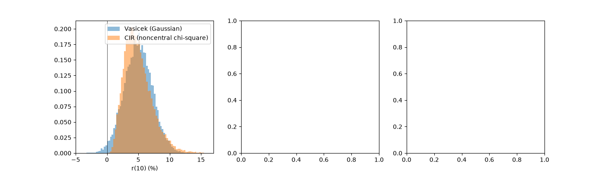

Note
Go to the end to download the full example code or to run this example in your browser via JupyterLite.
Cox-Ingersoll-Ross: the square-root short rate#
John Cox, Jonathan Ingersoll and Stephen Ross (1985) derived the short rate from a general-equilibrium economy and found
\[dr = \kappa(\theta - r)\,dt + \sigma\sqrt{r}\,dW.\]
Volatility shrinks as the rate falls, so rates stay positive (under Feller’s condition), and bonds are still exponential-affine, with \(B(\tau) = 2(e^{\gamma\tau} - 1)/[(\gamma + \kappa)(e^{\gamma\tau} - 1) + 2\gamma]\), \(\gamma = \sqrt{\kappa^2 + 2\sigma^2}\). The transition density is a scaled noncentral chi-square, which allows exact simulation.
import matplotlib.pyplot as plt
import numpy as np
from financialkit.interest_rate_models import CIRModel, VasicekModel, monte_carlo_bond_prices, path_discount_factors
cir = CIRModel(r0=0.03, kappa=0.5, theta=0.05, sigma=0.1)
# A Vasicek model with the same mean reversion and the same local volatility at theta
vas = VasicekModel(0.03, 0.5, 0.05, 0.1 * np.sqrt(0.05))
Level-dependent volatility keeps rates positive#
fig, axes = plt.subplots(1, 3, figsize=(14, 4))
_, r_cir = cir.simulate(10.0, 100, 20_000, rng=0)
_, r_vas = vas.simulate(10.0, 100, 20_000, rng=0)
bins = np.linspace(-4, 16, 81)
axes[0].hist(100 * r_vas[:, -1], bins=bins, density=True, alpha=0.5, label="Vasicek (Gaussian)")
axes[0].hist(100 * r_cir[:, -1], bins=bins, density=True, alpha=0.5, label="CIR (noncentral chi-square)")
axes[0].axvline(0, color="k", lw=0.5)
axes[0].set_xlabel("r(10) (%)")
axes[0].legend()
print(f"P(r(10) < 0): Vasicek {np.mean(r_vas[:, -1] < 0):.2%}, CIR {np.mean(r_cir[:, -1] < 0):.2%}")

P(r(10) < 0): Vasicek 1.23%, CIR 0.00%
Yield curves#
Text(0.5, 1.0, 'CIR yield curves')
Exact and Euler simulation against the closed form#
res = monte_carlo_bond_prices(cir, np.arange(1.0, 11.0), n_steps=100, n_paths=10_000, rng=1)
axes[2].plot(res.maturities, res.z_scores, "o-", label="exact sampling")
times, r = cir.simulate(10.0, 100, 10_000, rng=1, method="euler")
D = path_discount_factors(times, r)[:, 10::10]
axes[2].plot(np.arange(1.0, 11.0), (D.mean(0) - cir.zero_coupon_bond(np.arange(1.0, 11.0))) / (D.std(0) / 100), "s-", label="full-truncation Euler")
axes[2].axhspan(-2, 2, color="0.9")
axes[2].set_xlabel("maturity (years)")
axes[2].set_ylabel("(MC - exact) / SE")
axes[2].legend()
fig.tight_layout()
plt.show()
Total running time of the script: (0 minutes 0.512 seconds)